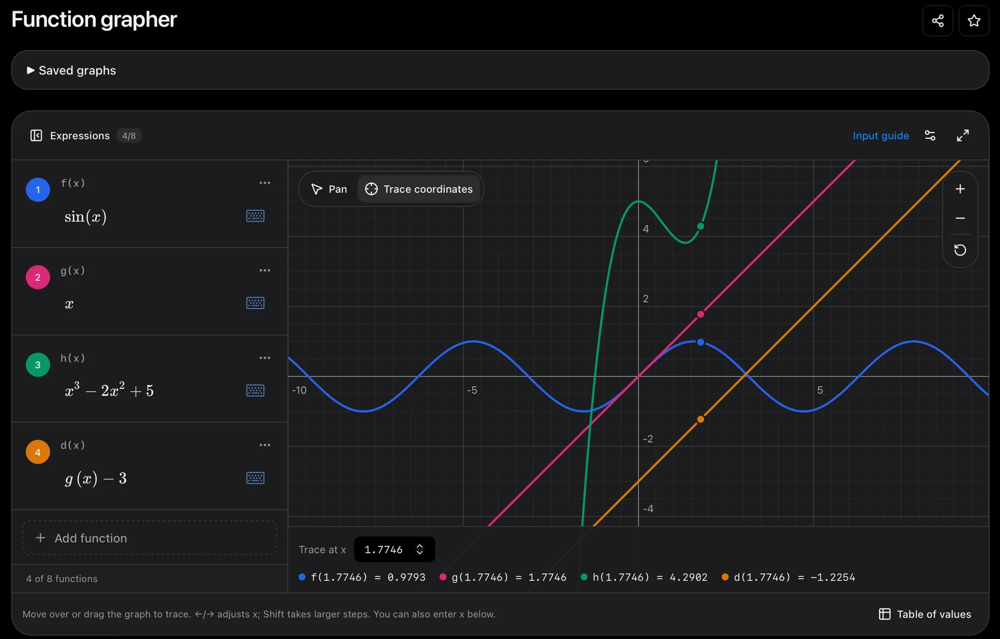
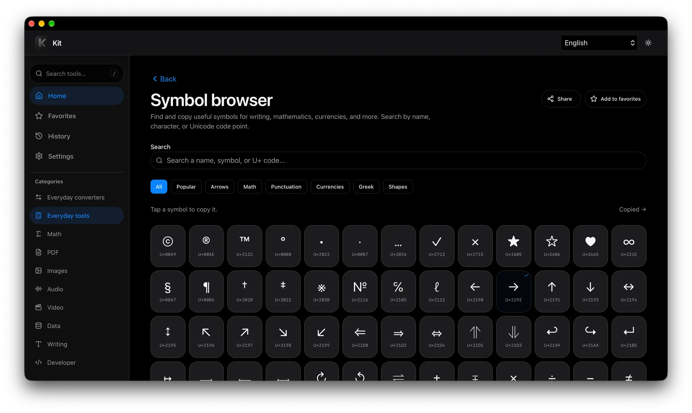

A workbench in the browser
Why I built Kit, an ad-free collection of browser tools for jobs like shrinking a photo or finding a symbol.
ProjectsLearningOn this page
I wanted one place for the little jobs I do in my browser. Some days that’s shrinking a photo or putting a few pages into a PDF. Other times I just need to find the right symbol and paste it into something I’m writing. I had privacy concerns about sending files to an online utility for a five-second edit, and I didn’t want ads in the way. So I built Kit around a simple idea. Open one tab, do the job, and get back to what you were doing.

What makes a photo smaller?
“Make it smaller” can mean two different things. A 4,000-pixel-wide photo can become 1,600 pixels wide. That gives the browser fewer pixels to store. Or I can keep the same dimensions and ask JPEG to use less detail when it writes those pixels out. Both can save space, but they give up different things. The first is often enough for a photo that will only ever be seen in a chat window. The second is worth a closer look if there’s small text or fine detail I want to keep.
In Kit, the browser decodes the original, draws it at the new size on a canvas, and encodes a fresh file. The original stays where it was. I put the before and after file sizes next to the result because a quality slider is a poor answer to “will this fit?” The size of the actual output is the answer.
One less trip through Downloads
The part I like most comes after the first edit. If the photo needs to go into a PDF, I can send the result straight to Images → PDF. The next tool receives the image in memory. I only need to save the file I came for. A folder full of nearly identical intermediate copies is a surprisingly easy thing to build by accident.
That’s also where Kit’s privacy promise becomes concrete. The site serves the tools, and the browser does the file work on the device. For a photo or PDF, I like that opening a web page and handing a server my file can be two separate things.
The tools I kept looking for
Some jobs are so small they’re easy to leave out of a toolkit. The Symbol browser came from one of those. I wanted a place to look up a character when I knew what it meant but couldn’t type it. Try searching for “right arrow” or U+2192. Either way, you can copy → as text and carry on writing. That felt as worth building as a tool with a progress bar.

A toolbox I can take offline
I also wanted Kit to feel like something I could keep. It’s an installable web app (a PWA), so I can open it from my phone’s Home Screen or in its own window on a computer. If I know I’ll be without Wi-Fi, I can use Settings → Offline access to download the tools and languages I want. Kit checks the saved files and shows which tools are ready.
That lets me keep a small kit on each device. A photo compressor and the Symbol browser might be enough on my phone. I can also save the larger PDF, audio, and video engines if I need them. Once the tools I’ve chosen are ready, I can open them and do the file work with the connection off.
Try it with a photo
Open Compress images and pick a JPEG. Set the maximum width to 1,600 pixels, then compare the result with the original. Run it again at the same width with a lower quality setting. Zoom in on a place with small text, leaves, or hair and see where you start to notice a difference. The useful number is the smallest file you’d still be happy to send.